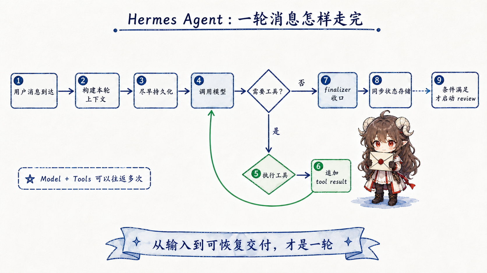
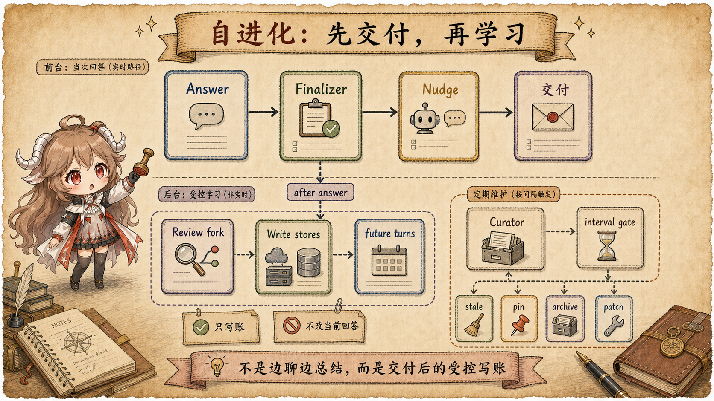
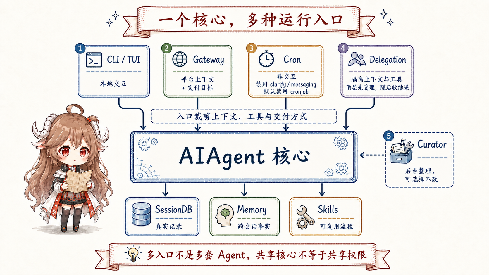
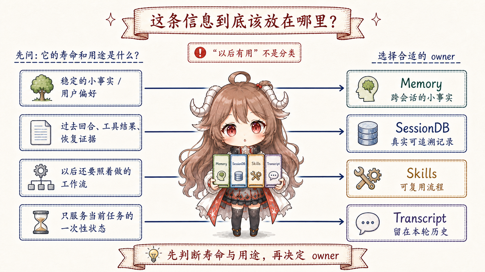

先从一个很普通的使用场景开始。你让一个 agent 在仓库里改一个功能：它先读 README 和项目规则， 然后搜代码、改文件、跑测试。测试失败后，它查看日志、补一个边界 case，又跑了一轮。中途你告诉它， “以后这个项目里不要直接改生成文件”；过了一会儿，你又问它能不能把刚才失败的命令找回来。
如果这只是一个短聊天，最简单的做法是把所有消息都追加到 history，再把整段 history 送给模型。 但一个会长期运行的 agent 很快会撞上四个问题：history 会膨胀，工具输出会淹没真正的任务， 用户偏好和一次性失败会混在一起，多入口运行时还会出现“CLI 里记得，网关里忘了，cron 里又不能问人”的断裂。
Hermes Agent 在 README 的功能地图 里把自己描述成 self-improving agent：有终端、gateway、闭环学习、cron、delegation、trajectory 等能力。 这些名字看起来很多，但它们都在回答同一个更朴素的问题：一个 agent 该怎样让“当前任务”“真实历史”“长期知识”和“后台学习”各自待在正确的位置？
证据边界。
本文只使用公开 README、配置文件和当前可见源码快照。直接事实来自固定源码链接；设计意图只在调用链、
数据形状和源码注释能够支撑的范围内推断。README 是功能地图，具体机制以源码为准；例如
session_search 工具本身在当前源码中明确走 SQLite/FTS5 并返回真实消息，不在工具内做 LLM 调用。
这篇文章的读法不是先背名词，而是带着五个问题往下走：
- 一轮用户消息进来时，Hermes 先保证什么东西不会丢？
- 模型真正看到的 view，为什么不能等同于 transcript 原文？
- 为什么 memory、session search、skills 必须是三本账，而不是一个“记忆库”？
- 后台自进化为什么要发生在回答之后，并且只能拿窄工具面？
- CLI、Gateway、Cron、Delegation 这些入口怎样共享同一个 agent core，又各自收窄风险？
只要这五个问题串起来，Hermes 的“自进化”就不再像一个抽象口号。它更像一套状态纪律：先交付当前任务， 再把可复用的东西沉淀到合适账本里；下一轮需要时再按来源、寿命和风险拿回来。
一、先把几条线理清：agent 不只是一段聊天记录
读这类源码，最容易误会的是把“对话历史”当成唯一事实来源。用户在界面上看到的历史、磁盘里保存的历史、 本轮 API 请求里模型实际看到的内容、以及后台 review 准备写入的长期状态，是四个不同的表面。
可以先把 Hermes 拆成四条线来看：入口面接收任务，前台回合组织模型和工具，持久层保存真实证据，长期账本沉淀偏好和流程。
AIAgent 站在中间，不是因为所有事情都写在一个类里，而是因为不同入口最终都要回到同一条回合生命周期。
| 表面 | 读者可以怎么理解 | 典型失败 |
|---|---|---|
| 入口面 | CLI、TUI、Gateway、Cron 或子 agent 触发一次任务。 | 每个入口自己拼上下文，行为很快分叉。 |
| 模型 view | 本轮真正发给 provider 的 messages、system prompt、工具 schema 和临时上下文。 | 把临时召回、时间、工具输出塞进稳定前缀，缓存和判断都会抖。 |
| 真实 transcript | 用户消息、assistant 消息、tool call 和 tool result 的持久记录。 | 只靠摘要恢复，丢掉以后排查需要的原始证据。 |
| 长期账本 | 小事实、可搜索历史、可复用流程分别进入 Memory、SessionDB、Skills。 | 把一次性任务状态硬化成长期规则，下一次反而误导模型。 |
开头那张总览图里，最重要的不是节点数量，而是方向：入口不直接写长期知识，后台 review 不直接抢前台回答， Memory、SessionDB、Skills 也不是同一个东西的不同名字。后面每个源码机制，都可以放回这四条线里检查。
二、一轮消息先要活下来，然后才谈智能
现在看第一轮真正发生的事。一个天真的 agent loop 可能会这样写：收到用户消息，调用模型，跑工具，得到最终回答， 最后再把所有东西写入历史。这个写法在 demo 里没问题，但在真实 runtime 里很脆：模型调用失败、工具执行卡住、 进程被杀，都会让刚刚发生的事情消失。
Hermes 的前台入口是
run_conversation。
它不是一上来就调用模型，而是先进入 build_turn_context：恢复 runtime 绑定、清理用户消息、恢复或构造 system prompt、
做早期持久化、准备插件上下文和外部 memory 预取。这个 turn context 的职责可以从
TurnContext 定义
和
构造过程
看到。
这里的第一条工程判断是：用户消息进入回合后，要尽早落盘。否则 agent 越能跑工具，越容易在失败时丢掉最关键的上下文。
run_agent 里的
_persist_session
负责把消息写入日志和 SQLite。它不让“回答完成”成为保存历史的前提。
user message arrives
-> build turn context
-> persist enough state early
-> call model
-> execute tools and append results
-> finalize response
-> sync stores and maybe spawn review
2.1 模型 view 不是 transcript 原文
下一步要区分两个很容易混在一起的东西：transcript 是恢复和审计用的真实记录；API-bound view 是这一次发给模型看的请求副本。
Hermes 在进入 provider 前会复制一份 messages。源码在
conversation_loop.py
里做了一个关键动作：外部 memory 预取结果和插件上下文只追加到当前用户消息的 API 副本上，不改原始 messages。
这一步解决的是一个非常实际的问题：本轮需要的召回信息，不一定应该成为永久历史；插件临时提供的提示，也不应该污染 transcript。 如果把这些东西直接写回真实消息列表，下一轮 agent 就很难分清“用户真的说过什么”和“上一轮为了推理临时拼进去什么”。
2.2 回合结束不是结束，而是状态分发点
当模型终于给出 final response，Hermes 还没有真正结束这一轮。 finalizer 会组装 result、执行 post hook、同步外部 memory，再根据条件决定是否触发后台 review。 这就是为什么自进化不应该被理解成“模型一边回答一边反思自己”：在 Hermes 里，它更像前台回合完成后的后置状态分发。
三、System prompt 不是杂物间，而是稳定规则层
如果一个 agent 需要项目规则、用户偏好、时间、会话信息、skills 索引、外部 memory provider block，最简单的想法是： 全部塞进 system prompt。这个做法短期很方便，长期会出问题。因为 system prompt 越像杂物间，越难保持稳定； 越多临时事实进入稳定层，模型 view 越容易抖，缓存前缀也越不可靠。
Hermes 的处理方式是把 system prompt 拆成层。
build_system_prompt_parts
的 docstring 写得很清楚：stable 放身份、工具指导、skills prompt、环境和平台提示；context 放调用者 system message
与项目上下文文件；volatile 放 memory snapshot、用户画像、外部 memory provider block、时间和会话信息。
可以把它理解成办公室里的三类东西：墙上的规则、桌上的项目资料、今天临时贴的便签。墙上的规则应该尽量稳定； 项目资料在当前工作区里相对稳定；便签会变，但它也要在会话开始时冻结成一个可解释的快照。外部 recall 这种本轮才需要的东西， 更适合贴到当前 user message 的 API 副本上，而不是改墙上的规则。
| 层级 | 放什么 | 保护什么 |
|---|---|---|
| stable | 身份、工具指导、skills 索引、平台提示、环境提示。 | 让最前面的规则尽量稳定，避免每轮重排。 |
| context | 调用方 system message、项目上下文文件。 | 让工作区相关信息有明确来源，不和长期事实混在一起。 |
| volatile | memory snapshot、用户画像、provider block、日期、session id。 | 让会话内动态信息可见，但不要每轮随机刷新。 |
| turn-only | 外部 memory 预取、插件 pre_llm_call 上下文。 | 只影响当前推理，不污染 transcript 和 system prompt。 |
这套分层也解释了几个源码细节：工具存在时，对应指导才进入 stable 层；skills 索引在 stable 层构造； context 和 volatile 在同一个 prompt 构造过程后半段汇合。相关代码可以从 身份和工具指导、 skills 索引构造 和 context / volatile 拼装 看到。
这里的 takeaway 很简单：不是“重要信息都进 system prompt”，而是“长期稳定规则才适合靠前；当前 turn 的召回，应该有当前 turn 的生命周期”。
四、长期状态不能只有一本账
现在回到开头那个场景。用户说“以后不要直接改生成文件”，这是一个偏好；测试失败的完整输出，是一次真实历史； 你摸索出一套以后都能复用的发布流程，这是程序性经验。三者都可以叫“记住”，但它们不能住在同一个地方。
Hermes 把长期状态拆成三本账：Memory、SessionDB、Skills。这个拆分不是为了分类漂亮，而是为了避免三类常见事故： 把证据总结成偏好、把偏好埋进 transcript、把一次任务的临时状态写成长期流程。

4.1 Memory：只放小而稳定的事实
Memory 适合放“以后也大概率成立”的小事实，例如用户偏好、环境事实、长期约束。它不适合放一大段日志，也不适合放一次任务的完整推理过程。
memory_tool.py 的模块说明
把边界写得很直接：内置 memory 使用 MEMORY.md 和 USER.md，会话开始时作为冻结快照进入 system prompt；
中途写入会落盘，但不会立刻更新当前 system prompt。
写入也不是随便 append。
MemoryStore.add
会做空内容检查、注入/泄露模式扫描、文件锁、磁盘重载、重复检查和字符预算检查；
replace
会拒绝多重匹配，避免误改。这里的保守性很重要：越长期的东西，越不能靠模糊感觉写入。
4.2 SessionDB：保存真实历史，供需要时检索
如果你想找“上次测试失败的原始输出”，它不应该变成 memory。因为你要的不是一个长期偏好，而是一段真实证据。
Hermes 的 session_search 走 SQLite session DB 和 FTS5 索引，返回真实消息窗口；工具说明在
session_search_tool.py。
discovery 会先调用 db.search_messages，再按 session lineage 去重，并用 anchored view 返回命中附近窗口；见
_discover。
底层 SessionDB 创建 FTS5 表和 trigram 表，messages 的 content、tool name、tool calls 都会进入索引；schema 在
hermes_state.py。
4.3 Skills：把可复用流程变成程序性记忆
Skills 解决的是另一类问题：下次遇到同类任务，agent 应该怎么做。它不是“用户偏好”，也不是“某次会话证据”，
而是程序性记忆。system prompt 里放的是技能索引和加载规则，正文按需加载。索引构造在
build_skills_system_prompt，
prompt 末尾要求模型匹配时用 skill_view 加载、发现问题时用 skill_manage 修补，见
同函数末尾。
修改技能的入口是
skill_manage。
它支持 create、edit、patch、delete、write_file、remove_file，成功后清空 skills prompt cache。工具 schema 还明确给出创建和更新信号：
复杂任务成功、克服错误、用户纠正后的方法、非平凡 workflow、用户要求记住流程，或者已加载 skill 过时/缺步骤；见
SKILL_MANAGE_SCHEMA。
到这里，memory、session_search、skills 三个名词就不再是突兀的功能名。它们分别回答三个问题： “以后也成立的小事实是什么？”“过去真实发生过什么？”“以后同类任务怎么做？”
五、工具调用不是模型的私事
一个 agent 能调用工具之后，风险也会跟着上来。读文件、写文件、跑命令、查 session、改 memory、spawn 子任务， 看起来都是 tool call，但它们的 owner 不一样。有些只是普通函数；有些必须由 runtime 持有状态；有些还会带来副作用和恢复问题。
Hermes 的工具执行器先区分并发和顺序路径。
execute_tool_calls_concurrent
支持多个工具并发执行并保持原始 tool-call 顺序追加结果；
顺序路径
则处理交互类或需要更严格控制的工具。
更关键的是 runtime-owned 工具的分派：session_search 要拿 session DB，memory 要调用内置 memory store 并通知外部 provider，
delegate_task 要交给 agent 自己的 delegation dispatcher。这些分派在
tool_executor.py。
也就是说，模型可以请求工具，但工具的状态边界、审计和恢复语义仍然属于 runtime。
这一步和前面的账本设计是连在一起的：如果 memory 只是普通工具，模型可能把临时观察写成长期事实； 如果 session_search 不知道 session DB，模型就只能靠摘要猜过去发生了什么；如果 delegation 不是 runtime-owned，父子上下文很容易互相污染。
六、自进化必须在交付之后发生
前面讲完回合、状态账本和工具边界之后，才适合谈“self-improving”。否则这个词很容易被误解成： 模型一边回答一边反思自己，或者每轮结束都把整段对话总结成长期经验。听起来很聪明，实际会带来两个问题。 第一，当前任务还没交付，模型就开始分心判断“这件事值不值得记住”；第二，中间试错、临时路径和一次性日志可能被写成长期事实。

可以从一个很普通的场景理解：你让 agent 修一个测试失败。它在过程中发现了项目的固定命令、你的提交偏好， 还试过几条最后没用上的路径。哪些应该留下？测试日志本身应该进 SessionDB；“以后这个项目先跑某个脚本”可能适合变成 skill； “用户不希望自动改生成文件”可能适合进 Memory；那些走错的临时路径，则不该变成任何长期状态。
Hermes 的答案不是“每轮自动总结”，而是一条交付后的受控写账流程：当前 turn 先产出最终回答； finalizer 只在满足条件时安排后台 review；review fork 只能使用 memory 和 skills 相关工具； 写入落到对应 store；之后的任务再通过正常的 memory 快照、skills 索引或检索路径看到这些变化。当前已经交付的回答不被改写， 主会话 transcript 也不会被后台 review 当场重写。
| 步骤 | 发生了什么 | 为什么这样安排 |
|---|---|---|
| 1. 先交付 | 前台回合完成工具调用和最终回答。 | 用户要的是当前任务结果，不是等待模型自我总结。 |
| 2. 再判断 | finalizer 看本轮是否有 final response、是否被 interrupt、memory/skill nudge 是否到点。 | 避免每轮都跑后台学习，也避免失败或中断回合留下错误经验。 |
| 3. 开后台分支 | background review 拿本轮 messages snapshot，fork 一个同配置的 AIAgent 回看刚才发生的事。 |
它能看到本轮用户消息、assistant 回复、工具调用和工具结果，但不抢前台任务的上下文。 |
| 4. 限制能写哪里 | review fork 只能调用 memory 和 skill 管理工具，外部 memory provider 也被跳过。 | 自进化只允许写长期账本，不能变成另一个能随意操作环境的 agent。 |
| 5. 以后再生效 | 写入成功后，后续 turn 通过正常的 Memory / Skills 读取路径使用它。 | 学习结果影响未来任务，而不是反过来篡改已经交付的这一轮。 |
所以读 Hermes 的自进化，不要先问“模型有没有反思能力”，而要问四个更具体的问题：谁触发这次学习？它能看什么？ 它能写到哪里？写完什么时候才会影响下一轮？源码里的 background review 和 curator，正好分别回答“单轮之后学什么” 和“长期技能库怎么整理”。
6.1 Finalizer：只在回答完成后排 review
先看触发点。finalizer 在组装 result、执行 post hook、同步外部 memory 后，才判断是否触发 memory/skill review。源码在
review 触发
里能看到：只有有 final response、未被 interrupt、且 memory 或 skill nudge 触发时，才调用 _spawn_background_review。
这里的 nudge 不是模型突然想到“我该学习了”，而是 runtime 的节流信号：memory nudge 按用户回合数累计，skill nudge 按工具调用迭代数累计。
对应计数可以看
turn_context.py
和
conversation_loop.py。
如果前台 agent 已经主动用了 memory 或 skill_manage，对应计数会被重置；见
工具执行前的计数重置。
所以后台 review 不是固定税，而是“这段时间没有显式沉淀，且现在安全结束了，再检查一次”。finalizer 不让 review 参与“当前答案怎么写”，
只让它在答案完成后判断“这轮结果是否暴露了可复用信息”。
因此它不会因为后台学习而延迟用户看到回答，也不会让 review 中途改变前台 agent 的决策路线。
6.2 Review fork：同一套 runtime，窄工具面
background_review.py 的模块说明
把这个分支的职责写得很直接：它拿刚完成的 conversation snapshot，fork 一个 agent 回看本轮对话，判断是否应该保存或更新 memory / skill；
写入直接落到对应 store，主会话和 prompt cache 不被触碰。真正构造 review agent 的逻辑在
_run_review_in_thread。
这里的 snapshot 不是只有最终答案，还包括本轮 history 里的工具调用和工具结果，所以 review 能区分“最后采用的做法”和“中途试过但失败的路径”。
这个 fork 不是一个“第二个前台助手”。它继承父 agent 的 provider、model、credential、toolset 配置和 cached system prompt，
这样判断语境和请求形状尽量一致；但它用 skip_memory=True 避免外部 memory provider 把 review prompt 当成用户真实对话吸收进去。
同时，它把工具面收窄到 memory 和 skills，非白名单工具会在 runtime 被拒绝；见
白名单和 run_conversation 调用。
这让“学习”变成受控副作用：它可以写账，但不能继续执行用户任务。
写入之后也不是马上反向改写当前回合。Memory 写入会落盘，但当前 system prompt 里的 memory snapshot 仍然是本轮开始时的快照； skill 变更会影响后续 skills 索引的构造或失效路径。换句话说，后台 review 的结果服务于下一次任务，不会把已经交付的答案重新加工一遍。
Review 完成后还会扫描自己的 tool 结果；只有真的创建或更新了 memory / skill，才向前台汇报一个很短的 self-improvement summary。 相关汇总逻辑在 action summary。 这也是一个产品细节：用户看到的是“沉淀了什么”，不是另一个冗长的后台推理过程。
6.3 Curator：不是每轮反思，而是长期整理
Background review 解决的是“这一轮之后是否有东西要沉淀”。但如果 agent 长期运行，skills 会越来越多：有的被频繁使用，
有的过期了，有的其实可以合并。这时需要的不是再看某一轮对话，而是整理整个技能库。Hermes 里的 curator 就是这个角色。
curator.py 的文件说明
写明它会周期性 review agent-created skills，做 lifecycle 状态迁移，必要时 fork 一个 AIAgent 去 pin、archive、consolidate 或 patch 技能。
Curator 不是“每轮都整理一次技能”。should_run_now 会检查 enabled、paused 和 interval gate；首次观察只播种 last_run_at，不立即运行，见
should_run_now。
自动状态迁移会把长期未活跃技能标记 stale 或 archived，pinned 不动，见
apply_automatic_transitions。
到这里，自进化的流程就完整了：短期任务由前台 turn 解决；单轮之后的偏好和流程沉淀由 background review 解决； 多轮累积后的技能库膨胀、过期和合并问题由 curator 解决。三者都叫“改进”，但触发时机、可见上下文和可写范围都不同。
七、多入口共享核心，但不能共享所有权限
到这里，我们已经能理解单个前台回合。接下来要看多入口运行。Hermes 不只是一个 CLI；README 和源码里还有 gateway、cron、delegation。 如果每个入口都自己实现一套 agent loop，状态纪律会很快崩掉：gateway 里的平台上下文、cron 的非交互限制、子 agent 的隔离边界， 都会变成互相不一致的特殊逻辑。

7.1 Gateway：把平台上下文变成 prompt 边界
gateway 的任务不是简单把 Slack 或其他平台消息转发给模型。它要告诉 agent 消息来自哪里、有哪些 connected platforms、
home channels 和 delivery targets。数据结构在
SessionContext，
渲染成 system prompt 段的逻辑在
build_session_context_prompt。
前台消息处理时，gateway 会按 session key 复用或新建 AIAgent，构造参数里包含 model、runtime、toolsets、platform、user/chat/thread 信息和 session DB；见
agent 构造段。
最终仍然调用
agent.run_conversation。
7.2 Cron：非交互入口必须更窄
cron 的压力不同：它在没有用户实时互动的情况下运行。它不能随便澄清问题，也不能打开 messaging 或再次创建 cronjob。
_resolve_cron_disabled_toolsets
明确让 cron-spawned agent 禁用 cronjob、messaging、clarify 三类 toolset，再叠加用户配置的 disabled toolsets。
cron 还有一个 no_agent 路径：如果 job 不需要 agent，它完全不构造 AIAgent，只执行脚本并交付 stdout 或错误；见
run_job。
如果走 agent，prompt 会在组装后再次扫描注入风险，尤其覆盖 runtime-loaded skill content 和脚本输出；见
_scan_assembled_cron_prompt。
7.3 Delegation：子任务隔离，父亲只拿摘要
delegation 解决的是另一种压力：父 agent 不应该把所有探索细节都塞进自己的上下文。delegate_task 的模块说明写明，
子 agent 有隔离上下文、受限 toolsets 和自己的 terminal session；父 agent 阻塞直到子任务完成，但父上下文只看到 delegation call
和摘要结果，不看到子 agent 的中间工具调用和 reasoning。见
delegate_tool.py。
子 agent 默认不能使用 delegate_task、clarify、memory、send_message、execute_code，
这在
DELEGATE_BLOCKED_TOOLS
中定义。构造子 agent 时，还会 skip_context_files=True、skip_memory=True，并有独立 iteration budget；见
子 agent 角色和工具集计算
以及
AIAgent 构造参数。
八、最后回到那个问题：信息到底该放哪里？
读完这些机制，再回到一开始的使用场景：用户偏好、测试失败、工具输出、可复用流程、一次性任务进度， 都不是“随便记一下”。Hermes 的源码给出的真正答案，是先判断信息类型，再决定它进入哪一本账，以及什么时候让模型重新看到它。

| 看到的信息 | 放哪里 | 为什么 | 放错会怎样 |
|---|---|---|---|
| 用户长期偏好、小型环境事实 | Memory | 小、稳定、可审计，适合作为会话快照进入 prompt。 | 如果只留在 transcript，下次需要时可能找不到。 |
| 过去某次工具输出、完整对话证据 | SessionDB / session_search | 需要保留真实消息窗口，而不是改写成总结。 | 如果写进 memory，会把一次证据伪装成长期规则。 |
| 以后同类任务可复用的方法 | Skills | 它是程序性记忆，需要索引、正文和 patch 语义。 | 如果写成 memory，模型只知道结论，不知道流程。 |
| 当前任务进度、临时失败、探索过程 | Transcript only | 它对恢复有用，但不应硬化成长期事实。 | 如果沉淀太早，下一次会被错误约束。 |
8.1 四个常见误读
第一种误读，是把 memory 当成所有历史的归宿。Hermes 源码不是这么做的。Memory 有预算、扫描、冻结 snapshot 和手动语义； session_search 才是查真实历史的工具。
第二种误读，是把 skills 当成“每次任务都创建一个经验条目”。技能系统强调 class-level、patch existing skill 和支持文件， 不是一轮一个窄技能。
第三种误读，是把 background review 想成主回答的一部分。finalizer 的触发位置说明它发生在 final response 之后； gateway 也会排队 review summary，主响应交付后再释放。
第四种误读，是把 cron 当成普通聊天自动化。cron 禁用交互类工具、扫描组装 prompt，并且支持 no-agent 脚本路径。 非交互入口的默认假设必须更窄。
九、结论：自进化靠状态纪律，不靠“反思”这个词
Hermes Agent 的源码价值，不在于它给“自进化”起了多少功能名，而在于它把长期运行 agent 最容易混乱的状态边界拆开了： 当前 turn、模型 view、真实 transcript、小型 facts、可搜索历史、程序性 skills、后台 review、空闲 curator、多入口策略。
一个完全不懂 Hermes 的读者，读到这里只需要抓住一句话：agent 的长期能力不是把所有东西都记住， 而是知道每种信息什么时候该出现、出现在哪个 view 里、结束后该不该沉淀。
事实要小而可审计；
证据留在 transcript；
流程变成 skill；
当前 turn 的 recall 不污染稳定 prompt；
后台学习发生在响应交付之后。这也是 Hermes 最值得借鉴的地方：它没有把所有能力堆进一个越来越大的 prompt，而是给每种状态安排了 owner、生命周期和恢复路径。 一个可长期运行的 agent，真正难的是这些生命周期之间的边界。
参考源码
- NousResearch/hermes-agent 固定源码快照
- README 功能地图
- pyproject 包元数据
- run_conversation 入口
- TurnContext 定义
- system prompt 三层结构
- runtime-owned 工具分派
- finalizer review 触发
- Memory 工具说明
- Session search 工具说明
- SessionDB FTS5 schema
- skills prompt 构造
- skill_manage
- background review fork
- curator 不变量
- gateway SessionContext
- cron toolset 边界
- delegation 架构说明